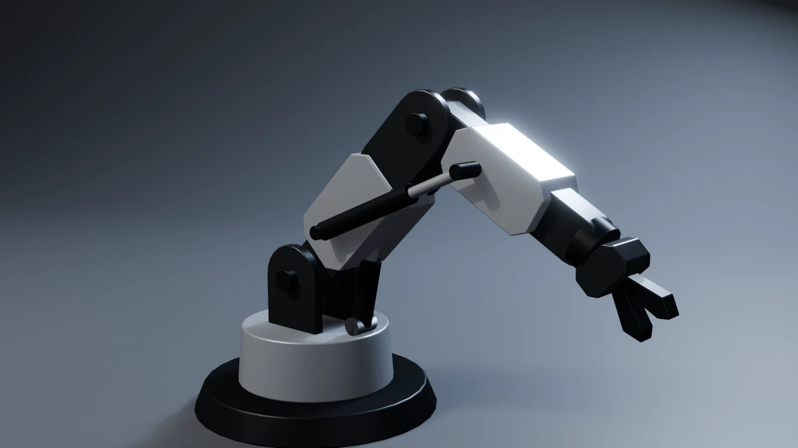
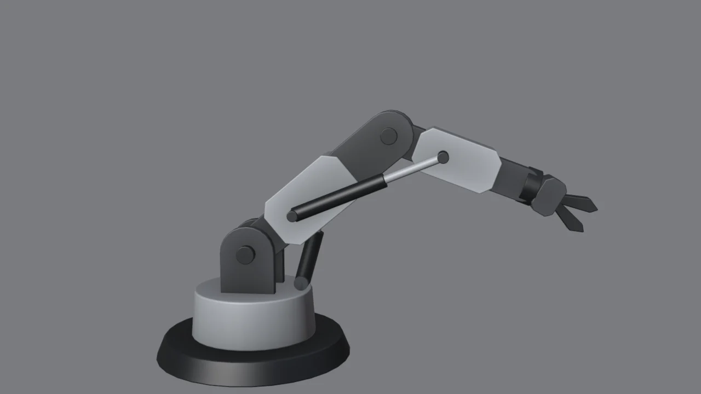
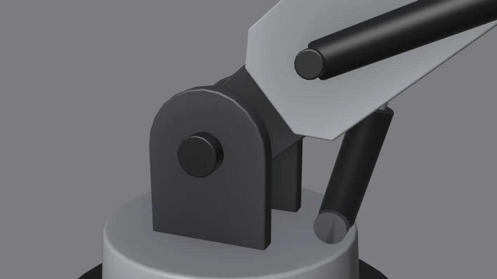
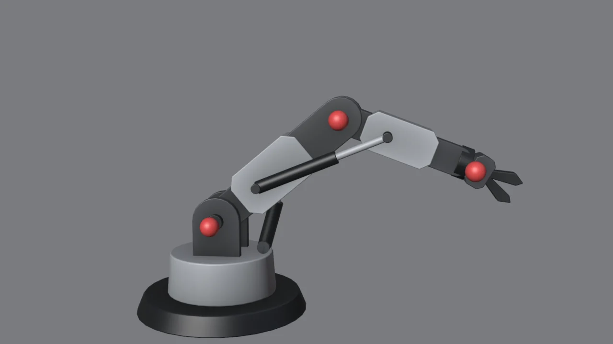
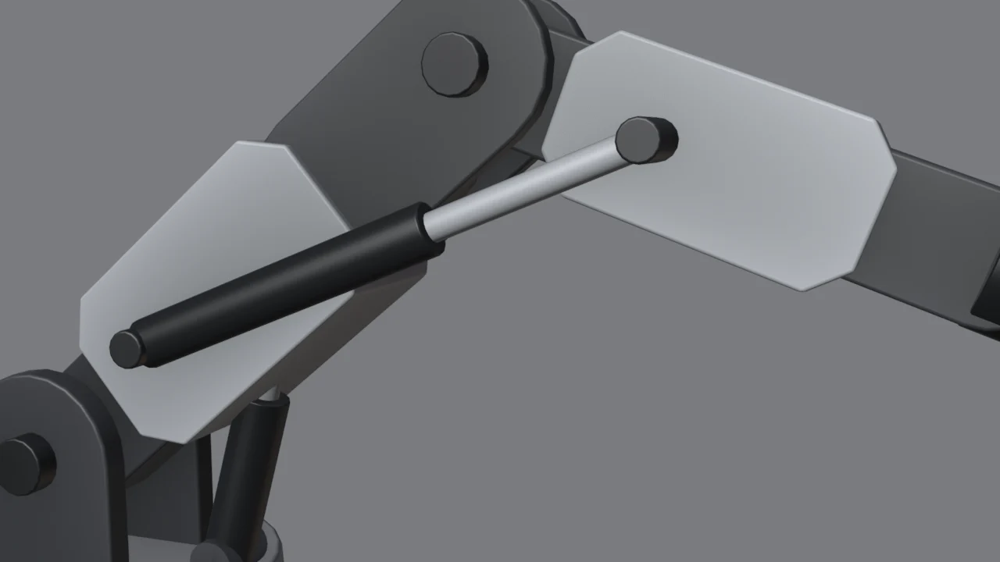

Lo que vas a forjar // objetivo


Es el mismo modelo en las tres imágenes: solo cambian 2 o 3 rotaciones. Esto es lo que necesitarás para el androide (hombros, codos, rodillas) y para cualquier mecanismo.
Gíralo en cada pose // 3D
La bisagra: horquilla, pasador y orejeta

Casi toda articulación mecánica es la misma pieza:
- Horquilla: dos placas paralelas con el extremo redondeado. Se hace con un perfil + Solidify (módulo 6) y un Mirror en Y para la segunda placa.
- Orejeta: el extremo redondeado de la otra pieza, que se mete entre las placas.
- Pasador: un cilindro que atraviesa las tres y sobresale un poco por cada lado.
- El extremo redondeado: un cilindro de 20–24 lados en vista frontal; en modo edición, borra la mitad de abajo y une lo que queda con una caja (F para rellenar, E para alargar).
- El centro del redondeo es exactamente donde irá el pasador. Apunta sus coordenadas en el panel N.
- Deja holgura: unos milímetros entre la orejeta y las placas. Si se tocan, parece soldado y no articulado.
Pivotes: el origen en el centro del pasador

- Selecciona el pasador del hombro y pulsa Shift+S → Cursor to Selected: el cursor 3D salta a su centro.
- Selecciona la pieza del brazo → menú
Object → Set Origin → Origin to 3D Cursor. - Comprueba: R Y y mueve el ratón. Si el brazo gira alrededor del pasador, está bien. Si «orbita» alrededor de otro punto, el origen está mal.
- Repite en cada articulación.
Error típico: si el origen está en el centro de la pieza (lo normal al crearla), al girarla se separa del pasador. Es el fallo número uno al articular robots.
Jerarquía: cada pieza arrastra a las siguientes
Cuando giras el hombro, el antebrazo y la pinza tienen que ir detrás. Eso es emparentar:
- Selecciona el hijo (antebrazo), luego con Shift el padre (brazo), y pulsa Ctrl+P → Object (Keep Transform).
- Cadena completa: Base → Torreta → Brazo → Antebrazo → Pinza. Las piezas pequeñas (pasadores, blindajes) se emparentan con la pieza a la que pertenecen.
- Para la base giratoria: la torreta gira en R Z y todo lo demás la sigue.
Truco limpio: en vez de emparentar directamente las mallas, crea un Empty (Shift+A → Empty → Plain Axes) en cada pivote y emparenta las piezas a él. Así giras el Empty y nunca tocas los orígenes de las mallas. Es como está hecho el .blend de este módulo.
Pistones que se estiran solos

Un pistón conecta dos piezas que se mueven por separado. El truco clásico usa dos partes que se miran entre sí:
- Anclajes: pon un Empty en cada extremo. El de la camisa se emparenta con el brazo y el del vástago con el antebrazo.
- Camisa (cilindro grueso y oscuro): modélala a lo largo de su eje Z, con el origen en la base. Emparéntala con su anclaje.
- Pestaña Object Constraints → Add → Damped Track: Target = el anclaje del otro extremo y Track Axis: Z. Ahora la camisa siempre apunta al otro extremo.
- Vástago (cilindro fino y claro): lo mismo, pero desde el otro anclaje y apuntando al primero.
- Mueve el codo: los dos cilindros se deslizan uno dentro del otro.
Las longitudes: la suma de camisa + vástago tiene que superar la distancia máxima entre anclajes, para que nunca se separen. Y cada una por separado tiene que ser menor que la distancia mínima, para que el vástago no asome por detrás. Prueba las poses extremas.
Límites de rotación
- En el panel N, pulsa el candado de los ejes que no deban girar (el codo solo gira en Y).
- Constraint Limit Rotation: activa Y con un mínimo y un máximo (por ejemplo, el codo de 0° a 110°). Así nunca atravesará el brazo.
- Activa Affect Transform para que el límite se note mientras rotas, no solo en el resultado.
Busca los topes: gira cada articulación hasta que choque y apunta el ángulo. Esos son tus límites. En diseño mecánico real se hace igual.
Armature: el siguiente nivel
Las jerarquías de objetos funcionan muy bien para máquinas. Para el androide, o para animar con comodidad, Blender tiene los huesos:
- Shift+A → Armature. En modo edición, coloca la cabeza del hueso en el pasador del hombro y la punta en el del codo.
- E desde la punta extruye el siguiente hueso (codo → muñeca), ya encadenado.
- Emparenta cada pieza con su hueso: selecciona la pieza, luego el armature, entra en Pose Mode (Ctrl+Tab), selecciona el hueso y Ctrl+P → Bone.
- En Pose Mode, R en un hueso gira su pieza. Los pistones con Damped Track siguen funcionando igual.
- Bonus: un constraint IK en el último hueso hace que la pinza siga a un objetivo y el brazo se doble solo.
Animar: pon una pose, pulsa I sobre los huesos para guardar un fotograma clave, avanza en la línea de tiempo, cambia la pose y vuelve a pulsar I. Con Espacio lo reproduces. Tu brazo ya se mueve.
Mecánica creíble // diseño
| Pregunta | Si la respuesta es «no»… |
|---|---|
| ¿Cada pieza que se mueve tiene un pasador o un eje visible? | Parecerá un muñeco de plastilina. Añade el pasador. |
| ¿Hay sitio para girar sin atravesar nada? | Prueba los extremos y recorta formas o añade holgura. |
| ¿Hay algo que «empuje»? (pistón, motor, engranaje) | El brazo parecerá de juguete. Un pistón le da fuerza. |
| ¿Hay piezas fijas y piezas móviles distinguibles? | Usa material: blindaje claro en lo que se mueve y estructura oscura. |
Reto: tu mecanismo // checklist
Diseña el brazo de tu androide (hombro, codo y mano), o una pierna con rodilla y tobillo. Lo usarás en el módulo 9.